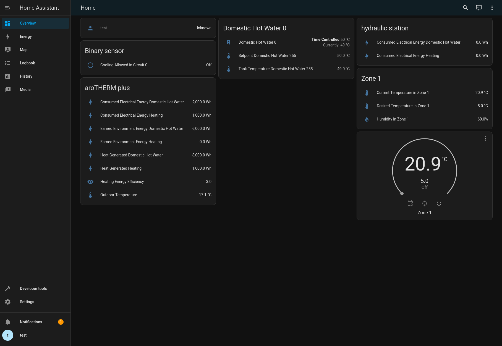

Contributing
Contributing to the Home Assistant Component
Warning
You need at least Python 3.10.
Fork and clone this repo, then from the root directory run:
python3 -m venv .venv
source .venv/bin/activate
pip install -r dev-requirements.txt
pre-commit install
# Make your changes
pytest
git commit ...
If you also need to modify the underlying myPyllant library,
clone & install it in editable mode in mypyllant-component:
# From the root of this repository
git clone https://github.com/signalkraft/myPyllant.git ../myPyllant
pip install -e ../myPyllant
Now you can modify myPyllant/src and directly develop against these changes in mypyllant-component.
Debugging
When debugging or reporting issues, turn on debug logging by adding this to your configuration.yaml
and restarting Home Assistant:
Testing in Docker

To get a quick test environment in Docker, copy .env.sample to .env,
add your credentials in the new file, and run docker compose up.
After HA started, open http://localhost:8123 in your browser and sign in with user test and password test.
The integration should be configured and show entities on the default dashboard.
Contributing to the underlying myPyllant library
Warning
You need at least Python 3.10
I'm happy to accept PRs, if you run the pre-commit checks and test your changes:
git clone https://github.com/signalkraft/myPyllant.git
cd myPyllant
python3 -m venv .venv
source .venv/bin/activate
pip install -r dev-requirements.txt
pip install -e .
pre-commit install
pytest
Supporting new Countries
The myVAILLANT app uses Keycloak and OIDC for authentication, with a realm for each country and brand. There is a script to check which countries are supported:
Copy the resulting dictionary into https://github.com/signalkraft/myPyllant/blob/main/src/myPyllant/const.py
Contributing Test Data
Because the myVAILLANT API isn't documented, you can help the development of this library by contributing test data:
python3 -m myPyllant.tests.generate_test_data -h
python3 -m myPyllant.tests.generate_test_data username password brand --country country
..or use Docker:
docker run -v $(pwd)/test_data:/build/src/myPyllant/tests/json -ti ghcr.io/signalkraft/mypyllant:latest python3 -m myPyllant.tests.generate_test_data username password brand --country country
With docker, the results will be put into test_data/.
You can then either create a PR with the created folder, or zip it and attach it to an issue.
Adding new API endpoints
If your myVAILLANT app has more features than this integration, chances are you have a more complex system then me. You can reverse engineer the API endpoints and open an issue with the requests + responses. See Reverse Engineering for a tutorial.
Running commands on your Home Assistant installation in Docker
If you're using this component in a Home Assistant installation that uses docker compose, you can run these commands directly (from the folder that contains your docker-compose.yml):